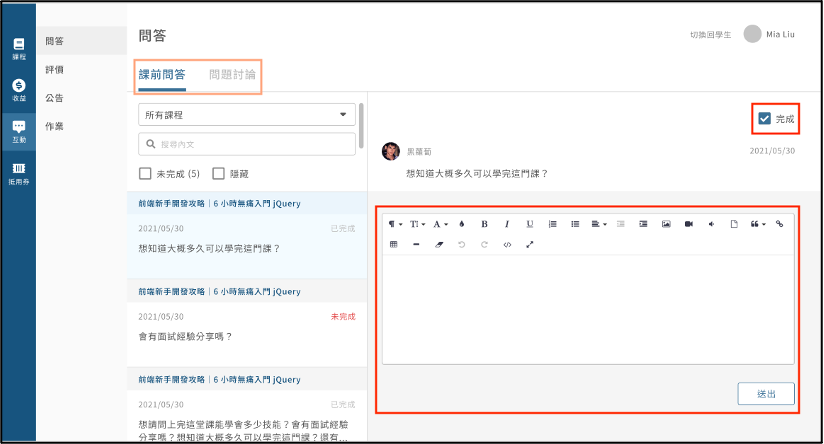
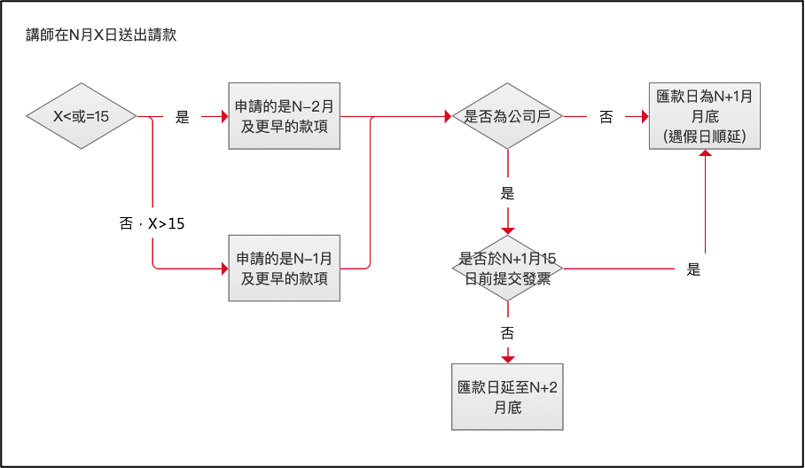

一、請款規則
您可以在後台的請款介面點擊請款，申請領取款項。我們團隊將在收到請款申請後的 7-14個工作天 內進行審核，並向您發送確認款項的通知信。款項將在當期一起支付，通知信中將包含當期的出款明細，例如製作費、地方稅和當期收入等項目。
*請款條件如下：
- 請款金額需大於3000元。
- **不得重複請款：**除非特殊情況，您需要等待收到當次請款的款項後，才能開始下一次請款。
*範例：今天是4月16日，某講師於2月16日請領了1月份的款項，但因未提交發票，無法請領2月16日以後的款項。
- **完成問題回覆：**依照目前的消費契約，解決學生課程問題仍然屬於講師（或合授講師）的服務範疇之一。請款前，講師（或合授講師）必須 回覆問題或 標注完成學生的提問（如下圖），包含課前問答和問題討論。若發生交易糾紛或用戶的疑慮，需要由平台介入解決，我們會根據當時情況收取該次請款金額3%的服務費。嚴重情況下，可能會將您的課程下架，以維護消費者的體驗。當然，如果遇到特殊情況，您仍然可以與我們的團隊進行溝通和協商，共同解決問題。

二、出款週期
每月的計算期間從月初至月底，並在每月的 15號 23:59 結算上個月的款項。 每月16號開始，您可以請求上個月及更早之前的款項（不包括尚未開課的募資款項）。若要請款，請在當月底前提交申請，款項將於請款 次月月底匯出（遇假日順延）。公司戶請務必於請款 次月15日前提供發票，若逾時提供發票，匯款日將遞延至下一個月。
*發票資訊：
發票抬頭：有點意思科技股份有限公司
統一編號：43840551
發票品名：版稅
請將紙本發票以掛號信郵寄至「新北市三重區重陽路四段 132 號 9F」，或將電子發票寄送至「hiskio@hiskio.com」
*總結(如下圖)：
- 每月1日至月底：計算期間。
- 每月15號：系統結算上個月款項。
- 每月16號(含)以後：可請求上個月及更早款項（不包含未開課募資款項）。
- 當月底前：提交請款申請。
- 次月：15日前公司戶需提供實體或電子發票；月底款項付款（遇假日順延）。

三、情境範例
假設今天是2023年4月16日，您已經在2023年3月份賺取了收入，並且符合請款條件，想請求2023年3月份的款項。以下是請款流程的例子：
2023年3月1日至3月31日：計算期間，您在此期間所賺取的收入將被累計。
2023年4月15日：對於2023年3月份的款項進行結算。
2023年4月16日：您可以開始請求2023年3月份（包含更早以前的款項，但不包括尚未開課的募資款項）。換句話說， 若是 4/15 就只能請款 2月跟更早以前的款項。
2023年4月30日前：您需要提交請款申請。
2023年5月15日：您需要提交發票。
2023年5月30日（遇假日則順延）：您將收到2023年3月份的款項。
若有其他問題歡迎來信 support@hiskio.com 詢問。
更新時間： 25/10/2023